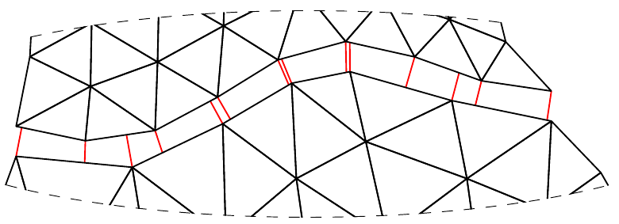

Mortar2D.jl documentation

Mortar2D.jl is a julia package to calculate discrete projections between non-conforming finite element mesheds. The resulting "mortar matrices" can be used to tie non-conforming finite element meshes together which are meshed separately to construct bigger models.
Using mortar methods in mesh tie problems results variationally consistent solution. Mathematically, goal is to solve mixed problem with primary field variable and Lagrange multipliers, which have a physical meaning (e.g. contact pressure if unknown field is displacement). The problem arising is a typical saddle point problem with zeros on diagonal.
Mortar2D.jl is part of JuliaFEM. All codes are MIT licensed.
Installing and testing package
Installing package goes same way like other packages in julia, i.e.
julia> Pkg.add("Mortar2D")Testing package can be done using Pkg.test, i.e.
julia> Pkg.test("Mortar2D")Contributing
Have a new great idea and want to share it with the open source community? From here and here you can look for coding style. Here is explained how to contribute to open source project, in general.